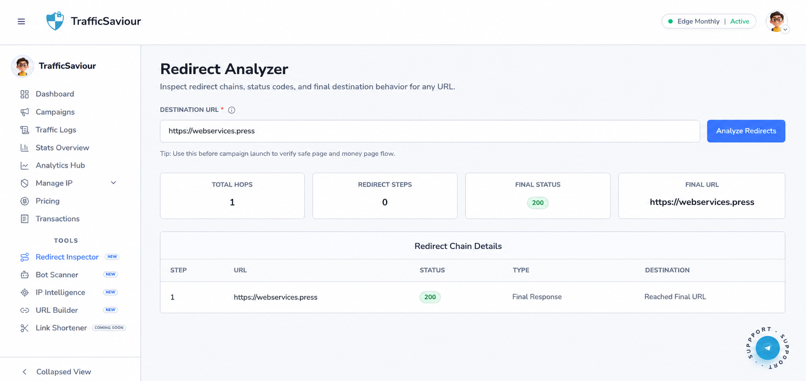
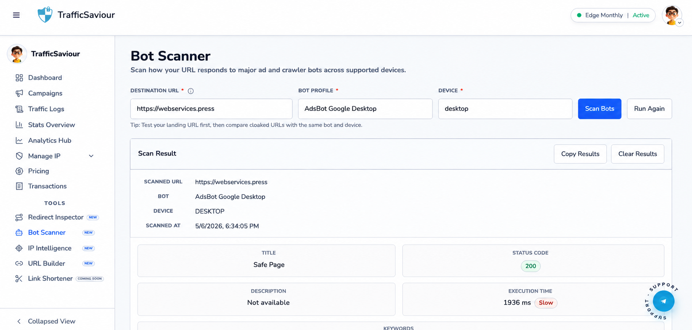
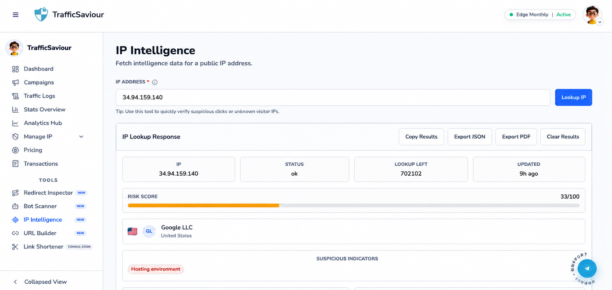
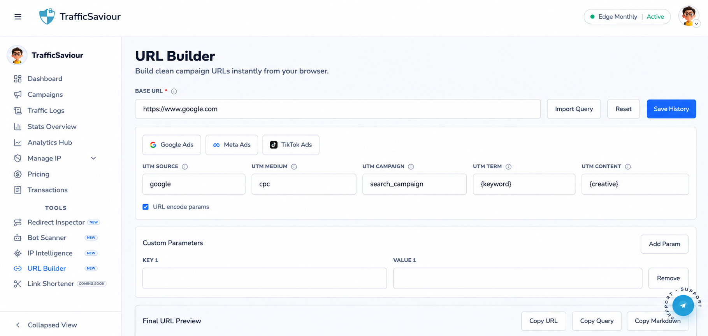
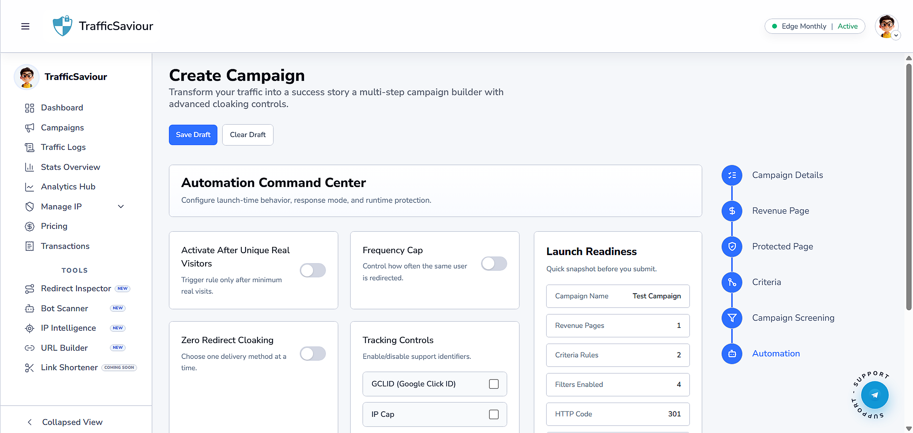

Tools Guide
Deep operational guide for each tool with copy-ready SOP checklists.
Redirect Inspector
Inputs
Target URL (required).
Outputs
- Redirect steps count
- Final status code
- Final URL
- Hop-by-hop chain table
SOP Checklist (Copy-Ready)
- Paste campaign URL and run scan.
- Confirm final status code is expected (usually 200 for landing).
- Check there are no unexpected redirect hops.
- Verify final URL matches intended money/safe path.
- Save screenshot of hop table for audit.
- If mismatch found, pause launch and escalate with evidence.
SOP Result Template: URL: Final Status: Redirect Count: Final URL: Issue Found: Yes/No Action Taken:

Redirect Inspector result with hop table and summary metrics.
Bot Scanner
Inputs
- URL
- Bot profile
- Device profile
Outputs
Status code, execution time, response summary, and scan history.
SOP Checklist (Copy-Ready)
- Select landing URL and choose primary bot profile.
- Run scan on mobile and desktop device profiles.
- Repeat same scan for cloaked/alternate URL.
- Compare status code and response differences.
- Export scan history CSV for record.
- Flag suspicious bot-only behavior to compliance lead.
SOP Result Template: URL: Bot Profile: Device: Status Code: Execution Time: Difference vs Baseline:

Bot Scanner compare-style output across profile/device runs.
IP Intelligence
Inputs
IPv4 or IPv6 address.
Outputs
- Network/provider details
- Location metadata
- Detection flags
- Export JSON and blacklist action
SOP Checklist (Copy-Ready)
- Paste suspicious IP from reports/logs.
- Run lookup and review provider/location/risk signals.
- Cross-check with campaign geo expectations.
- If high-risk, add to blacklist with reason note.
- If trusted internal/partner traffic, consider whitelist.
- Export JSON evidence and attach to incident note.
SOP Result Template: IP: Provider: Country: Risk Signals: Decision: Whitelist/Blacklist/Monitor Reason:

IP Intelligence panel with provider, location, and risk flags.
URL Builder
Inputs
Base URL + UTM source/medium/campaign/term/content + alias (optional).
Outputs
- Built URL
- Length warning
- Template/history
SOP Checklist (Copy-Ready)
- Paste base destination URL.
- Fill all required UTM fields using naming standard.
- Validate URL length warning before publishing.
- Copy generated URL and test in browser.
- Save template for reuse by channel/team.
- Store final URL in campaign notes.
SOP Result Template: Base URL: UTM Source: UTM Medium: UTM Campaign: Final URL: Tested: Yes/No

URL Builder with UTM controls and generated final link.
URL Shortener
Purpose
Create compact links without losing campaign intent.
SOP Checklist (Copy-Ready)
- Start from validated long URL only.
- Create readable alias using campaign naming standard.
- Generate short URL and open it in clean browser tab.
- Confirm redirect lands on correct final page.
- Run short URL through Redirect Inspector once.
- Publish only after QA pass is complete.
SOP Result Template: Long URL: Alias: Short URL: Redirect Verified: Yes/No Final Destination: Approved By:

URL Shortener flow view (click image to zoom).
Deep Operations Notes
This section is intentionally detailed so teams can run the platform consistently across shifts. For every workflow on this page, define owner, input quality standard, expected output, and escalation condition. Keep a short run-log for each action so troubleshooting is evidence-based and reproducible.
Execution Standard
- Validate data inputs before action.
- Apply one change at a time and measure impact.
- Capture screenshot or log output for audit trace.
- If result is unexpected, rollback and isolate variable.
Quality Control
Use pre-check, action-check, and post-check. Pre-check verifies assumptions, action-check confirms behavior during execution, and post-check confirms business impact in reports. This three-layer method reduces silent failures in campaign operations.